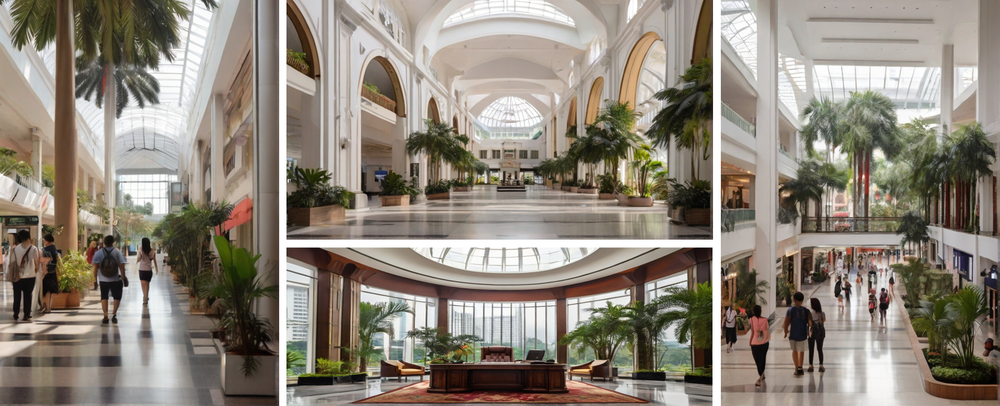

Questions on Aesthetics
Why this design? What does it say about Penang?
• It looks regal, grand, stately.
• It looks like a government building.
• It has the design language of Penang architecture, such as being predominantly white, has straight pillars, as wood ascents.
• It looks like a heritage building yet modern and relavant. The glass adds a touch of contemporarism to it.
• It is a timeless design and wont get old or outdated.
• You can distinguish it as a Penang architecture rather than say a Singapore or Indonesian one.
• The plentifullness or plants and garden is also signature of Penangs architecture and environment. Singapore's enviroment usually have sparse greeneries or very organized and manicured plants.
Why is it unique? Is it iconic?
• It is unique in that you don't see such designs around, yet it is not overly unique where it is oddly out of shape and place, or has become some experimental play piece scupture for some artsy architect who is trying too hard to be different or to impose his own brand and style onto the design
• It is also unique and regal that it frequently draws breath from anyone who lays eyes on it.
• I think it is also uniquely beautiful enough that it will join the ranks of some of the most iconic buildings in Penang."
Questions on Architecture Concepts
What does your building apply the concept of Architectural Space?
What is the user experience with your building and how do they interact with its architetural spaces.
What problems do you solve problems with your architectural design?
How your architecture design of a library affects the culture of speed, productivity, reading, and learning.
Questions on Form and Function
What are some unique features of this building? Why is it better than the old Komtar?
• It features high ceiling because we believe high ceiling gives it prestige. It also looks better, more welcoming, and makes people feel at easy and can breath easily while in the building. People wont feel claustrophobic.
• It is built like Queensbay, 1st Avenue, Paragon and Gurney Plaza malls where it emphasis on the ease of finding your way around instead of complex pathways and alleyways where visitors can get lost or where it gets secluded because of lack of foot traffic.
• It has a mall-type building management to take care of the building and its aestethics, so that it wont fall into disrepair and becomes run-down.
Questions on Layout
How is the layout of the building? (entrance, atrium, concourse, retail outlets, food courts, etc)
How high is the concourse? How high is one level?
Which direction does it face and how is it affected by the sun?
Chief Minister's Office:
What are the improvements to Chief Minister's office?
Where will be the Chief Minister's office be located?
• The chief minister's office will be located at the section/building at the backend. The building will be a separated from the main public and service building for security purposes for the chief minister as well as for visiting foreign dignitaries.
How to make it impressive to foreign dignitaries?
• The chief minister's office will have a curved glass wall with a paranomic view.
Car Park

What are the features of the carpark?
• The carpark is built like 1st Avenue where the parking bays are wide, well lighted, the floor has a polished finish, and the driveway and slopes have a generous width that won't stresses out drivers when they park there. Getting from the car park should be a pleasure. 1st Avenues escalator and elevators from the carpark to the mall are also very well-designed, with them overlooking the streets below on one side.
How is the layout of the carpark?
• The carpark will be marked which section of the building they are in so that they can park closes to the place they want to go and just take the escalator to their nearest section. There will be multiple escalators leading up to different sections of the building.
Where are the entrance and exits of the carpark located?
• The carpark entrance for the employees and the public enters at the left side of the building and exits on the right side of the building. There are two entrances and exits. One for employees and one for the public.
Are the carpark multistory or underground or both?
• The carpark is both multistory and underground. The carpark occupies the 5th, 6th, 7th floor of the building, the 8th level is reserved for the mall
Are there separation between employees car park and public carpark?
• The carpark for the employees are on the back side while the car park for the public is located near the front side. Public carpark cannot access employees carpark for security reasons.
E-hailing / Taxi stands and drop-off area
• There will be an area with multiple stands for e-hailing pick-ups and drop-offs so that it won't congest the main entrace area.
Purpose and Functionality:
What is the primary purpose of the government building?
What functions and activities will be housed within the building?
How can the design facilitate efficient workflow and communication among different departments?
User Needs:
Who are the primary users and occupants of the building?
What are their specific spatial and functional requirements?
How can the design accommodate the needs of people with disabilities?
Symbolism and Image:
How should the building reflect the values and identity of the government it represents?
What visual symbols or architectural elements can be incorporated to convey a sense of authority and transparency?
• Competency: The layout of the building and its functionality i.e. the easy of access and use will reflect its competency
• Accountability: The tall pillars, white color reflects accountability.
• Transparency: The tall ceilings, open spaces, and glass reflects transparency.
• Harmony: The mix between glass, steel, concrete and wood materials will reflect the diversity and harmony that is found in Penang.
Sustainability:
How can the building be designed to be environmentally friendly and energy-efficient?
Are there opportunities for incorporating renewable energy sources or green building technologies?
Community Integration:
How can the design foster a sense of community and engagement with the public?
Are there public spaces or features that can be included to encourage civic participation?
Adaptability and Future Growth:
How flexible is the design to accommodate changes in government functions and organizational structures over time?
Is there room for expansion or modification as the needs of the government evolve?
Technological Integration:
What technological infrastructure is needed to support the functions of the government building?
How can technology be seamlessly integrated into the design to enhance efficiency and connectivity?
How can the design foster a sense of community and engagement with the public?
Are there public spaces or features that can be included to encourage civic participation?
Adaptability and Future Growth:
How flexible is the design to accommodate changes in government functions and organizational structures over time?
Is there room for expansion or modification as the needs of the government evolve?
Technological Integration:
What technological infrastructure is needed to support the functions of the government building?
How can technology be seamlessly integrated into the design to enhance efficiency and connectivity?
What technological infrastructure is needed to support the functions of the government building?
How can technology be seamlessly integrated into the design to enhance efficiency and connectivity?
• For service counters and queue system, a beeper like the ones provided in Gurney Plaza food court can alert the user when is their turn so that they can go drink at a nearby stall while waiting. Perhaps a queue counter could also be built into the beeper
• One of the main purpose of people going to this building is to pay bills. If there can be a central system where service counters can accept payments on behalf of different departments. Enquiries can be done at specific department counters themselves.
• Centralized apps with online payment systems can also help reduce the need to come to the government building itself.
Common Data Center and IT Management Office
• A common data center and IT management office will be located at the secure "CM Section" of the building.
• A fiber optic backbone will be wired throughout the building, so that any office in the building can acess the data center and the Internet.
• There will also be a fast public wifi for the public to access the Internet.
Aesthetics and Urban Context:
How does the design fit into the surrounding urban or natural environment?
• There will be a lot of foliage surrounding and within the building to simulate the signature environment that is Penang.
What aesthetic considerations should be taken into account to enhance the overall visual appeal?
•
More Questions:
In today's world quite a bit of answers are already out there, the more important thing is to ask the right questions.
• We can come up with the questions ourselves, or we can ask ChatGPT to help us ask the right questions.
Exercise: Create Questions from the
Competition Requirements
Position of the Administration Center (15%):
Site Optimization (5%): Evaluate how well the proposed location maximises the available space, considering factors such as sunlight exposure, wind direction, and overall integration with the surrounding environment.
Accessibility (5%): Assess the accessibility of the administration building and offices, considering factors like proximity to public transportation, parking facilities, and ease of entry for people with disabilities.
Functional Efficiency (5%): Consider the efficiency of the proposed layout in facilitating the day-to- day functions of the administration building and offices.
Facilities Consideration of Function Space (25%):
Parking Facilities (7%): Evaluate the design and capacity of parking facilities, taking into account the anticipated needs of both employees and visitors.
Leisure Spaces (6%): Assess the inclusion of well-designed leisure areas that contribute to the overall well-being of the occupants and enhance the aesthetic appeal of the site.
Service Facilities (6%): Consider the inclusion of service facilities such as waste management, security, and other essential services to ensure a smooth operation.
Food and Beverage (6%): Evaluate the planning and integration of food and beverage spaces, considering factors such as accessibility, variety, and sustainability.
ESG Incorporation (25%):
Environmental Sustainability (8%): Evaluate how well the proposal addresses environmental concerns, including energy efficiency, water conservation, and the use of sustainable materials.
Social Impact (8%): Assess the proposal's consideration of social aspects, such as community engagement, inclusivity, and the creation of public spaces that foster social interaction.
Governance Standards (9%): Evaluate the adherence to ethical governance practices, including transparency, accountability, and compliance with relevant regulations.
Overall Synergy of the Design and Concept (35%):
Design Cohesiveness (12%): Evaluate how well the landscaping and building positioning work together to create a unified and aesthetically pleasing design.
Innovative Concepts (12%): Assess the creativity and originality of the proposed design and concept, considering unique features or innovative solutions.
Practical Feasibility (11%): Consider the practicality and feasibility of implementing the proposed design, considering potential challenges and realistic timelines.